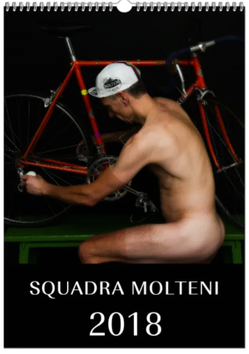

Happy ending i Kalendergate

Bevægelsen Kvinder tilbage til værkstedskalenderen og Squadra Molteni har nu begravet stridsøksen. “Kalendergate” har nu fået en happy ending.
Kort før nytår, opstod der tumult foran J. P. Jepsens Trykkeri i Nr. Snede, hvor Squadra Moltenis omstridte værkstedskalender var under produktion. En større gruppe af kvinder fra bevægelsen Kvinder tilbage til værkstedskalenderen havde taget opstilling med bannere og skilte under parolerne: “Ingen gamle mænd i kalendere” og “Kvinder tilbage i kalenderne”. Der blev også råbt ukvemsord fra kvindemængden.
Jeg hørte bl.a. at der blev råbt “Grane har hår på ryggen” og “Jens ligner Julemanden”, fortæller Kaptajn Bjørnsteen
Kvinderne demonstrerede fordi de ville have stoppet Squadra Moltenis kalender, da den efter sigende indeholdte nøgenbilleder af mænd. Kaptajn Bjørnsteen fra Squadra Molteni forsøgte over flere omgange at få en dialog med kvinderne.
Det lykkedes først at få kvinderne hidset ned, da jeg kunne vise, at der rent også var billeder af Squadra Moltenis kvinderytter Maria i kalenderen, afslører Bjørnsteen.
Over et længere møde og flere flaske belgisk øl, blev der landet et forlig mellem Kvinder tilbage til værkstedskalenderen og Squadra Molteni.
Vi landede på en fornuftig aftale, det går ud på, at der næste år kommer flere kvinder med i Squadra Moltenis kalender – og at Solvej Sommer fra bevægelsen, skulle medvirke i reklamekampagne “Sig Molteni til din kalender”, slutter Kaptajnen med et fornøjet smil på læben.

